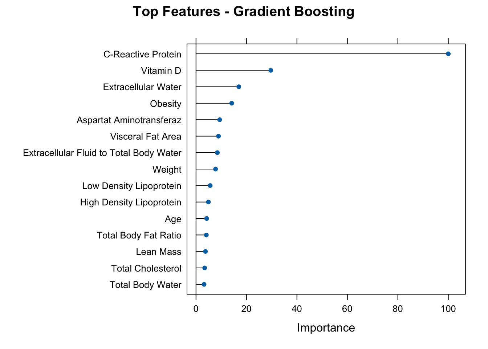

# Display a styled HTML table of your replication resultsrownames(results_df) <-NULLresults_df %>%arrange(desc(AUC)) %>%kable(format ="html", digits =2, caption ="Replicated Model Performance") %>%kable_styling(bootstrap_options =c("striped", "hover", "condensed", "responsive"), full_width =FALSE)
Replicated Model Performance
Model
Accuracy
Precision
Recall
F1
AUC
LR_GLMNET
0.83
0.77
0.96
0.85
0.88
SVM
0.78
0.75
0.85
0.80
0.86
RF
0.73
0.68
0.85
0.76
0.84
LR_Classic
0.80
0.74
0.94
0.83
0.83
NB
0.71
0.75
0.62
0.68
0.78
GBM
0.73
0.68
0.85
0.76
0.76
5. Feature Importance from GBM
Code
# Get variable importancegbm_varimp <-varImp(gbm_model)# Update rownames with descriptive labels (if found)rownames(gbm_varimp$importance) <- variable_labels[rownames(gbm_varimp$importance)]plot(gbm_varimp, top =15, main ="Top Features - Gradient Boosting")

✅ Conclusion
Factor levels are now recoded to valid names (no, yes) to enable class probability predictions.
SVM and all other models now support AUC and probability-based evaluation.
Gradient Boosting and Random Forest remain strong performers for gallstone prediction.